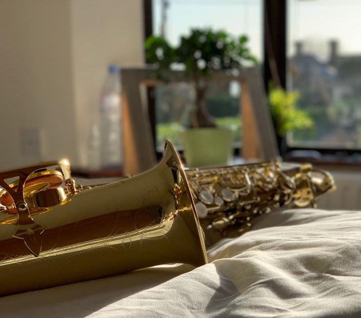

Creativity is intelligence
having fun.
- Albert Einstein
As far as I can go back in time, I have always loved Art, every type of Art. I can spend hours painting, singing and playing music. It is a way for me to express myself, my emotions, my creativity.
Music
 I started learning to play the guitar when I was about 22 years old to accompany me on vocals. I've been singing since I
was 14. I am passionate about soul, blues and jazz. The guitar was just a hobby because let's be honest I never really
acquired a decent level.
I started learning to play the guitar when I was about 22 years old to accompany me on vocals. I've been singing since I
was 14. I am passionate about soul, blues and jazz. The guitar was just a hobby because let's be honest I never really
acquired a decent level.
I bought my saxophone in Ireland at the age of 32. It was a childhood dream. I've always been fascinated by this instrument. When I started playing the saxophone it was like a revelation. My saxophone follows me everywhere now. On the saxophone I mainly play jazz. I particularly admire the genius of the saxophone, John Coltrane. I play Alto but I dream of buying myself a Tenor when I have the level. The sound of the Tenor is like a caress to the soul.
Painting
Some of my painting..😅


Sport
I've always been athletic. I was in roller derby for almost 5 years and my team even participated in a French championship. I also did Martial Arts for 4 years. I stopped just before the black belt... but I had a good excuse... I had to realize my dream of traveling...
My favorite quote
“Le hasard pur n'engendre que le chaos. Le déterminisme pur ne crée rien de nouveau. C'est l'association de ces deux facteurs qui donne naissance à la richesse et à la variété des formes de la Nature.” ― Hubert Reeves